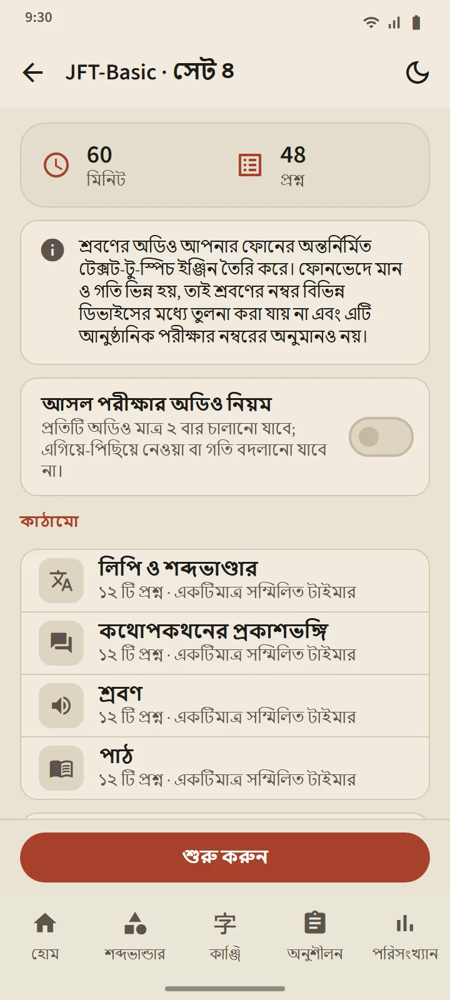
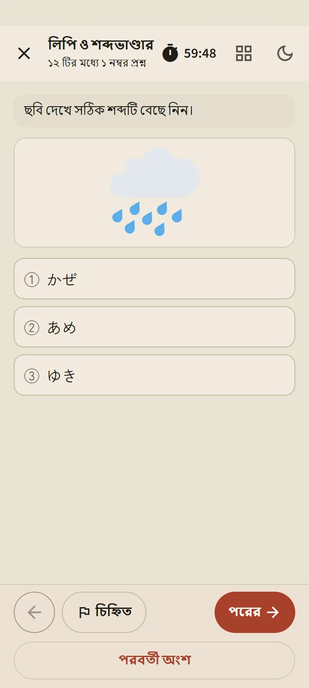
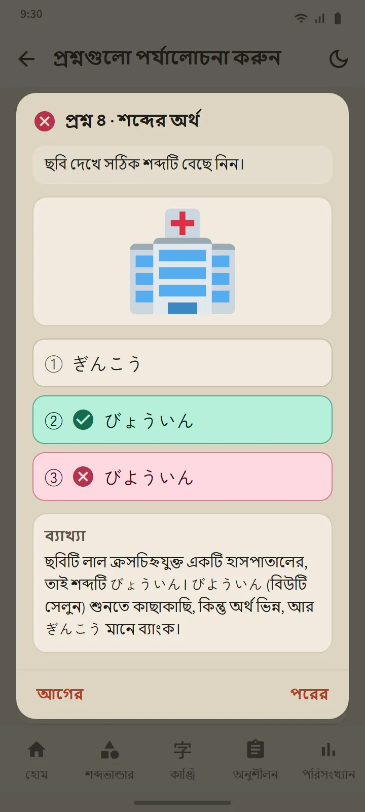

ছয়টি স্তর, 24টি সেট
অনুশীলন ট্যাবের প্রতিটি স্তরের কার্ড খোলে স্তরের পাতা: একটি শুরু বোতাম, নম্বরযুক্ত সেটের টাইল এবং ইতিহাস। সব সেট শেষ হলে মিশ্র অনুশীলন খোলে, যেখানে আপনি যে প্রশ্ন কখনো দেখেননি সেগুলো আগে আসে। নতুন সেট আসে অ্যাপ আপডেটের মাধ্যমে।
| পরীক্ষা | সেট | প্রতি সেটে প্রশ্ন | সময় |
|---|---|---|---|
| JFT-Basic | 8 | 48 | 60 মিনিট |
| JLPT N5 | 8 | 68 | 90 মিনিট |
| JLPT N4 | 2 | 85 | 115 মিনিট |
| JLPT N3 | 2 | 102 | 140 মিনিট |
| JLPT N2 | 2 | 107 | 155 মিনিট |
| JLPT N1 | 2 | 101 | 165 মিনিট |


প্রশ্নের ধরন আসল পরীক্ষা অনুসরণ করে
JFT-Basic-এর প্রশ্নে তিনটি বিকল্প থাকে (ব্যাকরণে চারটি), পরিস্থিতি ও নির্দেশ শিক্ষার্থীর নিজের ভাষায়, এবং অনেক প্রশ্নে একটি ছবি, অফিসিয়াল নমুনা প্রশ্নের মতোই। JLPT-র প্রশ্নে চারটি বিকল্প, স্তর অনুযায়ী ফুরিগানা এবং নানা রূপের পাঠ্য থাকে: ছোট গল্প, মেমো, নোটিশ, বার্তা, ইমেইল ও তথ্যের ছক। প্রকাশের আগে প্রতিটি সেট যাচাই করা হয়, এবং কোনো অফিসিয়াল প্রশ্ন কপি করা হয়নি।
শুরু করার আগে ব্রিফিং স্ক্রিনে সেটের কাঠামো দেখানো হয়: অংশ, প্রশ্নসংখ্যা ও সময়। সময়ের হিসাব আসল পরীক্ষার মতো: JFT-Basic-এ একটি সম্মিলিত সময়, JLPT-তে প্রতি অংশের জন্য আলাদা সময়। এগিয়ে গেলে আগের অংশ বন্ধ হয়ে যায়, ঠিক পরীক্ষার হলের মতো। সন্দেহের প্রশ্নে চিহ্ন দিতে পারেন, সাময়িকভাবে বেরিয়ে যেতে পারেন (ঘড়ি চলতে থাকে) এবং অনুশীলন ট্যাব থেকে আবার শুরু করতে পারেন।


ফোনের জাপানি কণ্ঠে শোনার অংশ
শোনার স্ক্রিপ্ট পড়ে শোনায় আপনার ফোনের জাপানি টেক্সট-টু-স্পিচ ইঞ্জিন, প্রতিটি বক্তার জন্য আলাদা কণ্ঠে। আসল পরীক্ষার মতোই উত্তরের বিকল্পগুলো শুধু শোনা যায়, ছাপা থাকে না; JFT-Basic ও N5-এ ছবির বিকল্প ব্যবহৃত হয়। “আসল পরীক্ষার অডিও নিয়ম” সুইচটি শোনার সংখ্যা আসল পরীক্ষা যতটা অনুমতি দেয় ততটায় সীমিত রাখে: JFT-Basic-এ দুইবার, JLPT-তে একবার।
কণ্ঠ আসে প্রতিটি ফোন থেকে, তাই মান ডিভাইসভেদে আলাদা; কোনো ফোনে জাপানি কণ্ঠ এখনও না থাকলে অ্যাপ দেখিয়ে দেয় কীভাবে ইনস্টল করবেন, আর তা না হওয়া পর্যন্ত শোনার অংশ বাদ থাকে।

অফিসিয়াল স্কেলে ফলাফল, তারপর প্রতিটি প্রশ্নের ব্যাখ্যা
JFT-Basic-এর ফলাফল আঁকা হয় 10–250 রেখায়, 145, 175 ও 200-তে চিহ্ন এবং তাদের স্তরের নাম A1, A2.1 ও A2.2 সহ, আর আসল পরীক্ষায় প্রতিটি স্তর কী কাজে লাগে তাও দেখানো হয়। JLPT-র ফলাফলে প্রতিটি স্কোরযুক্ত অংশ তার সর্বনিম্ন সীমার বিপরীতে দেখানো হয়, কারণ আসল পরীক্ষায় একটি অংশও সর্বনিম্নের নিচে হলে অকৃতকার্য ধরা হয়। দুটোর সঙ্গেই থাকে প্রতিটি অংশ ও প্রশ্নের ধরন অনুযায়ী সঠিক উত্তরের শতাংশ।
প্রশ্নগুলো পর্যালোচনা করুন বোতামটি প্রতিটি প্রশ্ন খোলে আপনার উত্তর, সঠিক উত্তর ও ব্যাখ্যাসহ; শোনার প্রশ্নে তার স্ক্রিপ্টও দেখানো হয়। ব্যাখ্যা 12টি ভাষায় পাওয়া যায়। প্রতিটি স্তরের ইতিহাসে আপনার সাম্প্রতিক অনুশীলনগুলো থাকে, আর স্কোর চার্ট থাকে পরিসংখ্যান ট্যাবে।
এই স্কোরগুলো অগ্রগতি বোঝার জন্য একটি অনুমান, আপনার অফিসিয়াল ফলাফলের পূর্বাভাস নয়।
যেসব ব্যাকরণ প্রশ্নের প্যাটার্নের পাঠ আছে, সেগুলো "এই প্যাটার্নটি শিখুন" দিয়ে সরাসরি সেই পাঠে নিয়ে যায়।


বিনামূল্যে ও Premium
বিনামূল্যের সংস্করণে প্রতিটি সেট খোলা। শুরু করুন চাপার পর সেই স্তরের পরের অনুশীলন 7 দিনের জন্য বন্ধ থাকে; অন্য স্তরগুলো খোলা থাকে, আর ইতিহাস ও ব্যাখ্যা কখনো বন্ধ হয় না। বন্ধ থাকাকালীন একটি বিজ্ঞাপন দেখে আরও একটি অনুশীলন খুলতে পারেন। Premium-এ কোনো বিরতি নেই। প্রশ্নের স্ক্রিনে বিজ্ঞাপন কখনো আসে না, কারও জন্যই নয়।